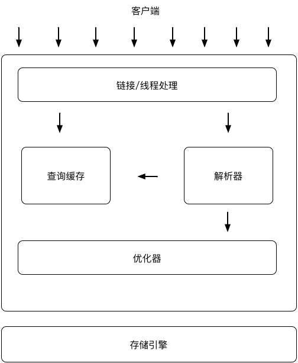

mysql|基础认知
基本概念
- DBMS(数据库管理系统):由一个相互关联的数据的集合和一组用以访问这些数据的程序组成。
- 数据库:数据集合的通称
- 文件存储系统和数据库管理系统比较的弊端
- 数据的冗余和不一致
- 数据访问困难
- 数据孤立:数据分散在不同文件中，这些文件综合检索困难
- 完整性问题:对数据的特定一致性约束，文件系统很难实现
- 原子性问题:并发读写的数据一致性问题
- 并发访问异常:并发读写的幻读问题
- 安全性问题
- 数据抽象
- 物理层:最低层次的抽象，描述复杂的底层数据结构
- 逻辑层:更高层次的抽象，实现物理数据独立性，隔离复杂的底层物理结构
- 视图层:最高层次抽象，描述数据库的某个部分
- 实例:数据库特定时刻存储在数据库中的信息的集合，即给定时刻数据库中数据的一个快照
- 模式:数据库的总体设计称之为数据库模式，数据库的逻辑设计
- 数据模式:数据模式是一个描述数据、数据联系、数据语义以及一致性约束的概念工具的集合
- 关系模型
- 实体-联系模型
- 基于对象的数据模型
- 半结构化数据模型
- 数据库系统功能部件
- 存储管理器:负责与文件管理器进行交互，将各种DML语句翻译为底层文件系统命令
- 权限及完整性管理器
- 事务管理器
- 文件管理器
- 缓冲区管理器
- 数据文件
- 数据字典
- 索引
- 查询处理部件
- DDL解释器
- DML编译器
- 查询执行引擎
- 存储管理器:负责与文件管理器进行交互，将各种DML语句翻译为底层文件系统命令
Mysql服务器架构图

基本命令行
- 连接
mysql -h 127.0.0.1 -P 3306 -u root -p - 选择数据库
use SomeDataBaseName; - 显示数据库列表
show databases; - 显示表列表
show tables; - 显示表项
show columns from TableName; - 显示表项
desc TableName; - 显示建表语句
show create TableName; - 显示建库语句
show create DataBaseName; - 显示错误
show errors; - 显示警告
show warnings; - 显示授权用户
show grants; - 给用户赋权
grant select,insert on database.table to user_name@"ip_addr" Identified by "password"; - 导出数据库
mysqldump -u user_name -p123456 database_name > outfile_name.sql - 导出数据表
mysqldump -u user_name -p database_name table_name > outfile_name.sql
SQL
- SQL语言构成
- 数据定义语言DDL:提供定义关系模式、删除关系以及修改关系模式的命令
- 数据操纵语言DML:提供查询信息，插入、删除、修改元组的能力
- 完整性:DDL包括定义完整性约束的命令，保存在数据库中的数据必须满足所定义的完整性约束
- 试图定义:试图相关命令
- 事务控制:事务开始和结束的命令
- 嵌入式SQL和动态SQL:定义SQL如何嵌入通用编程语言
- 授权:对关系和试图的访问权限和命令
- 定义内容
- 每个关系的模式
- 每个属性的取值类型
- 完整性约束
- 每个关系维护的索引集合
- 每个关系的安全性和权限信息
- 每个关系在磁盘上的物理存储结构
- 基本命令
- mysql命令